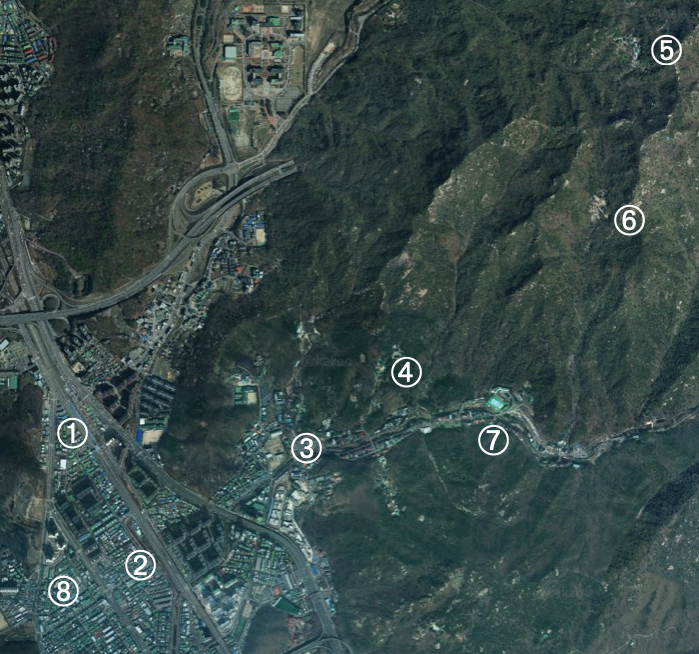
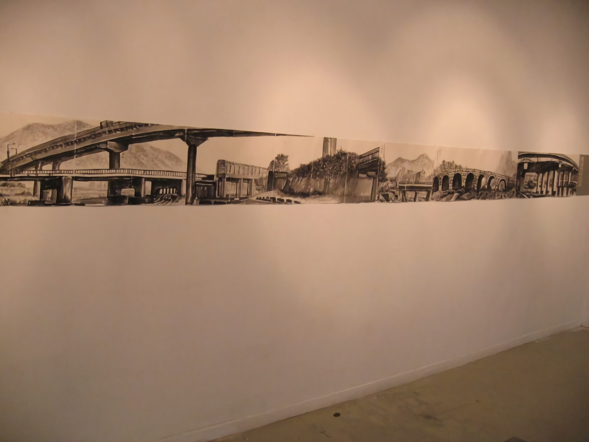
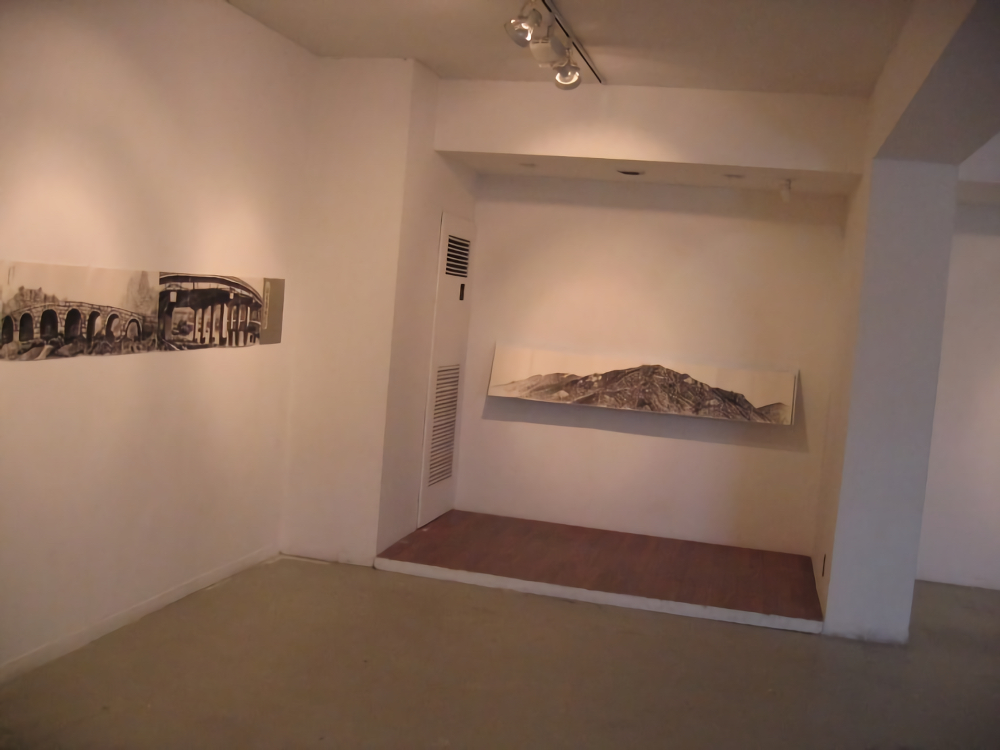
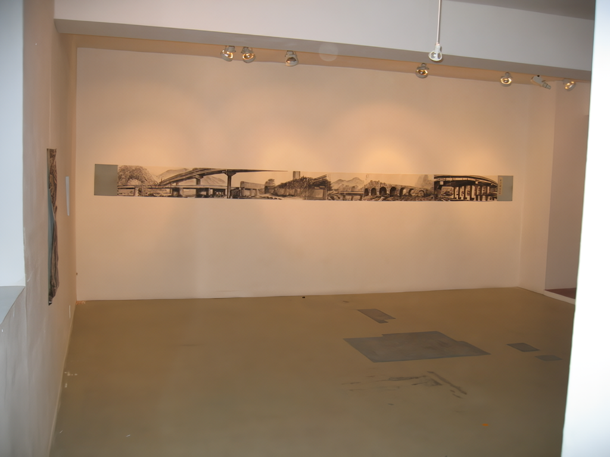
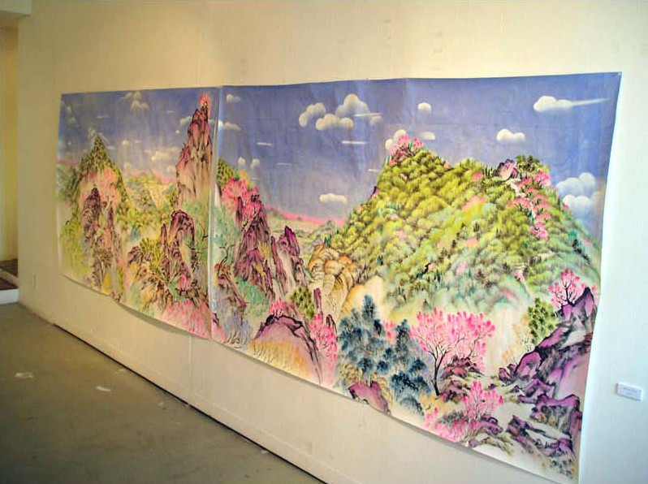
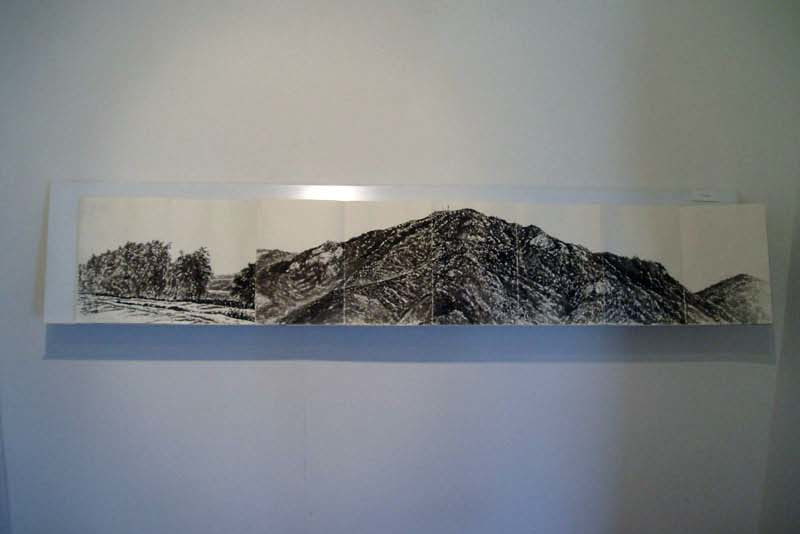

석수시장프로젝트 open the door!
2005.05.14. - 06.15.
안양진경(安養眞景) 프로젝트
삼성산(三聖山) 산수기행에 참여하세요.
예술가와 일반이이 함께하는 삼성산 산행을 통해 직접 자연을 체험하고 지역의 문화유산과 자연풍경 스케치, 문학창작을 유도해 앞으로 <안양진경문화>를 만들어 갈 계획입니다. 석수동은 오랜 역사와 그 유적이 많은 곳입니다. 정조대왕이 화성(수원)을 행차할 때 건넜다는 만안교(萬安橋), 원효와 의상대사가 세웠다는 삼막사, 영불암, 고려 왕건이 창건한 안양사, 석수동 마애종 유적은 물론 아기자기한 자연경관을 자랑하는 삼성산 삼성천이 흐르는, 매우 아름답고 새로운 문화가 부흥할 수 있는 토양을 가지고 있습니다. 이러한 자연환경과 역사적 토양에서 21세기 안양진경문화의 싹이 자랄 수 있습니다.
한양 VS 안양
겸재 정선의 한양진경(한양진경) 이후 삼성산진경(삼성산진경)이 중심이 되는 안양진경이 가능합니다. 관악산에서 서쪽으로 뻗어 내린 능선에서 우뚝 솟아오른 해발 481m의 삼성산은 바위로 이루어진 산으로 계절에 따라 다양하게 펼쳐지는 풍경이 산의 운치를 더해주며, 남쪽 골짜기를 흐르는 삼성천은 10리에 걸쳐 수려함을 뽐내고 있습니다. 안양사(安養寺)와 삼성천 일대의 안양유원지는 시민들의 여름 휴양지로도 잘 알려져 있는 곳으로 올해 10월에는 이 일대에서 <APAP 2005>라는 국제적인 예술행사가 열리기도 합니다. 삼성산을 예술가들과 함께 오르고 그들과 함께 삼성산을 그리고 시를 짓는다면 매우 흥미로운 산행이 되리라 생각합니다.
산수기행 프로그램 안내
5월 28일(토), 6월 4일(토) 오전 11시 관악역 1번 출구에서 출발
(참가예약 문의: 472-2886 stonenwater@hanmail.net)
관악역 - 만안교 - 마애종 - 전망대 - 삼막사 - 영불암 - 안양유원지 - 석수시장, 총 4시간 소요 예정.
프로그램 운영 : 홍주희, 이현열

①관악역 - ②만안교 - ③마애종 - ④전망대 - ⑤삼막사 - ⑥영불암 - ⑦안양유원지 - ⑧석수시장
스톤앤워터 전시장에서 만날 수 있는 안양진경(安養眞景) 작품들
   
